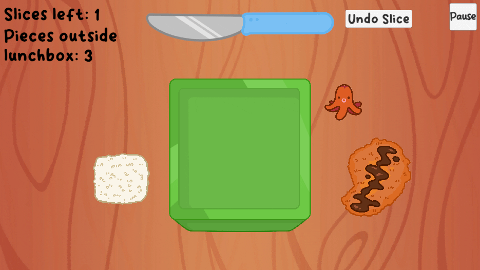

Featured Projects
A Slice of Lunch
Sept '24 - (Target) July '25
Role: Lead Developer and Designer | Game Engine: Unity | Team Size: 4
I finally finished making my lunch! But how will manage to fit it all into my lunchbox? A Slice of Lunch is a 2D organizational puzzle game where you must slice and manipulate your food into a lunchbox!
What I did
- Designed and documented core mechanics, gameplay features, and overall game atmosphere in a game design document
- Implemented features such as slicing food, verifying win conditions, animations & cutscenes. Integrated code, art, and audio assets from team members, ensuring all elements work seamlessly together

Star Flux
Nov '24 - (Target) Nov '25
Role: Gameplay Programmer | Game Engine: Unity | Team Size: 4
A spaceship lost in deep space must find its way back to the research station. However, with limited supplies and a path riddled with quantum anomalies, survival is uncertain. Navigate the ship and turn these anomalies to your advantage in order to make it back home.
This game was developed in 1 week for the Quantum Game Jam, hosted by Quantum Realm Games and Indie Game Academy. The goal was to make quantum behaviors conceptually more intuitive. As part of the rules of the jam, we had to use Quantum Realm Games' Quantum Forge Unity package, which allows us to simulate quantum behvaiors within Unity.
The team has continued to develop the game with the support of Quantum Realm Games
What I did
- Developed a hexagonal tile-based map system allowing the player to move seamlessly between adjacent tiles
- Worked with Quantum Forge in its alpha version, learning how it mimics quantum behavior, discorvering bugs, and providing feedback to Quantum Realms for improvements
- Implemented gameplay mechanics using quantum behavior such as flux tiles that collapses into either a safe or danger state, entangling paired flux tiles to be the opposite of state as its pair when measured, and using phase rotation to change the probability of what state a flux tile will collapse into

Borderline
Role: Lead Game Designer and Programmer | Game Engine: Unity | Team Size: 4
In this seemingly normal 32-bit action platformer, "The Hero" ventures deep into the forest, slaying monsters along the way. Developed in 12 days for the Unlikely Collaborators Game Jam and theme was Perception Box.
What I did
- Designed and implemented core gameplay features, such as player movement, abilities and attacks
- Collaborated with the sound designer and artist to integrate animations and sound effects into the actions of the player, enemy, and boss
- Designed and developed all 6 levels using parallax backgrounds, scene transitions, and enemy placements in order to make a dynamic and immersive world"
Rhythmic Harmony
Role: Gameplay Programmer | Game Engine: Unity | Team Size: 8
A 2D rhythm game with 2 tracks and 4 inputs. Developed in 4 days for the Girly Game Jam with the theme of Opposites Attract.
What I did
- Designed and developed a beatmap creation tool using CSV files, enabling team members to create beatmaps without having to use Unity
- Implemented player controls that allows the player to "hit a beat" and also the scoring system that's based on how accurately the player hits the beat on time
- Animated the player, beats, including an end-of-level cutscene
.gif)